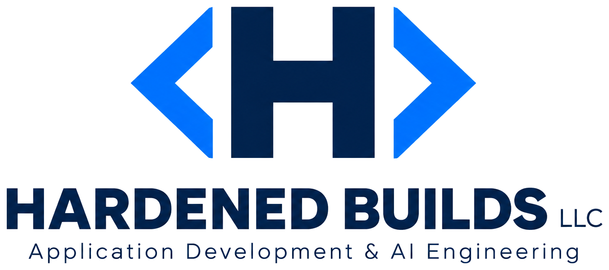

Secure by Default. Durable by Design.
Application Development & Artificial Intelligence Engineering
Hardened Builds LLC designs, develops, and supports artificial intelligence and application solutions across the complete software development lifecycle. Security, maintainability, and portability are foundational properties of every engagement rather than subsequent considerations.
Process Overview
Hardened Builds LLC delivers the complete application development lifecycle as a governed, sequential process. Position the pointer over a phase, or activate it by keyboard, to review its specific activities. Select a phase to open its detailed description.
-
01
Business Requirements
Elicitation and formalization of stakeholder objectives.
Business Requirements
- Structured stakeholder interviews and workshops
- Functional and non-functional requirements documentation
- Defined, testable acceptance criteria
- Requirements traceability matrix
-
02
Solution Architecture
Definition of system structure, technology, and security strategy.
Solution Architecture
- Architecture and component diagrams
- Technology selection and integration strategy
- Security and compliance design
- Token-efficient artificial intelligence design
-
03
AI/App Design
Detailed design of interfaces, data, and model interactions.
AI/App Design
- Interface and interaction design
- Data modeling and schema definition
- Model and prompt design specifications
- Detailed design documentation
-
04
AI/App Development
Implementation of the approved design.
AI/App Development
- Secure coding practices applied throughout
- Version control and peer code review
- Automated testing during development
- Continuous integration of changes
-
05
QA Testing
Independent verification of quality and correctness.
QA Testing
- Documented test planning and strategy
- Functional and regression testing
- Security and performance verification
- Structured defect management
-
06
UAT Testing Support
Support of user acceptance activities.
UAT Testing Support
- User acceptance test planning
- Preparation of test scenarios and data
- Defect triage during acceptance
- Facilitation of formal sign-off
-
07
Deployment Support
Controlled release to the production environment.
Deployment Support
- Documented release planning
- Controlled deployment execution
- Defined rollback procedures
- Post-release verification
-
08
Post-deployment Testing Support
Verification of system behavior in production.
Post-deployment Testing Support
- Production smoke testing
- Validation of monitoring and alerting
- Performance verification under live load
- Resolution of production-identified issues
-
09
Post-deployment HyperCare
Heightened support during the stabilization period.
Post-deployment HyperCare
- Dedicated response team
- Priority incident management
- Expedited defect resolution
- Regular stabilization reporting
-
10
Post-deployment Support
Ongoing maintenance and operational support.
Post-deployment Support
- Ongoing corrective maintenance
- Enhancements and change management
- Service-level-based support
- Continuous monitoring and reporting
Each phase links to a dedicated service page.

Services
The following services constitute the complete lifecycle delivered by Hardened Builds LLC. Each service is available as part of a full engagement or as a discrete contribution to an existing program.
- 01 Business Requirements Elicitation and formalization of stakeholder objectives.
- 02 Solution Architecture Definition of system structure, technology, and security strategy.
- 03 AI/App Design Detailed design of interfaces, data, and model interactions.
- 04 AI/App Development Implementation of the approved design.
- 05 QA Testing Independent verification of quality and correctness.
- 06 UAT Testing Support Support of user acceptance activities.
- 07 Deployment Support Controlled release to the production environment.
- 08 Post-deployment Testing Support Verification of system behavior in production.
- 09 Post-deployment HyperCare Heightened support during the stabilization period.
- 10 Post-deployment Support Ongoing maintenance and operational support.
Governing Principles
-
Security by Default
Authentication and authorization follow a default-deny model. Data protection and secure configuration are established at inception, not retrofitted.
-
Durable, Low-Maintenance Solutions
Solutions are constructed for long-term maintainability and for portability to the client's own platform, minimizing operational burden over time.
-
Efficient Artificial Intelligence
Artificial intelligence architectures minimize model token consumption through retrieval, caching, and deterministic processing, while preserving consistent results.
-
Verified Outcomes
Work is considered complete only when the requested outcome has been implemented and independently verified through executed tests and observable results.